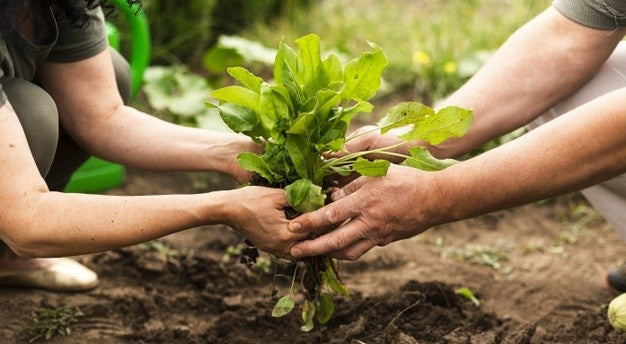
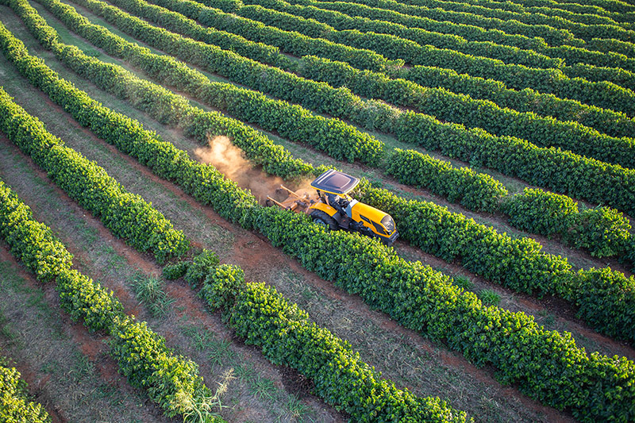

Bem-vindo(a)!
Neste site você encontrará um resumo sobre o conteúdo a ser apresentado, assim como terá acessso ao mesmo, usando a barra de navegação acima.
Agricultura Sustentável
A agricultura sustentável equilibra produção e meio ambiente, com práticas como uso eficiente de água, manejo do solo e diversificação de culturas. Incentiva agricultura familiar, produção local e gestão adequada de resíduos agrícolas.
Modelos de Cultivo
Modelos eficientes de cultivo são métodos agrícolas que maximizam o uso de recursos, reduzem o desperdício e aumentam a produtividade de forma sustentável.
Uso de IA na Agricultura

As IAs na agricultura integram-se monitorando safras, prevendo o clima, identificando doenças, analisando dados agrícolas e automatizando tarefas como a colheita e a aplicação de fertilizantes.
IAs Generativas
IAs generativas são sistemas autônomos que podem criar conteúdo original, como textos, imagens e músicas, aprendendo a partir de grandes conjuntos de dados.